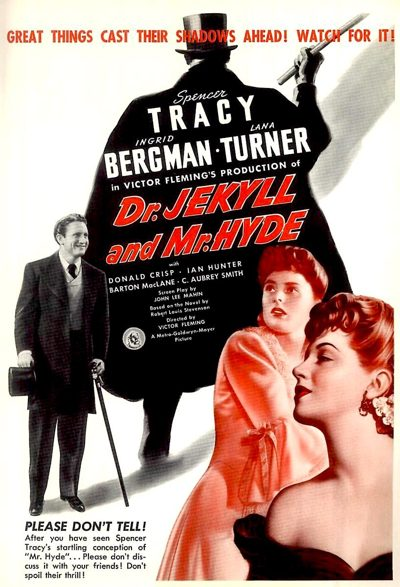

Dr. Jekyll and Mr. Hyde

Starring: Spencer Tracy, Ingrid Bergman, Lana Turner
Director: Victor Fleming
Writer: John Lee Mahin, Paul Osborn
Producer: Victor Saville
Dr. Jekyll and Mr. Hyde is a 1941 American horror film starring Spencer Tracy, Ingrid Bergman, and Lana Turner. The production also features Donald Crisp, Ian Hunter, Barton MacLane, C. Aubrey Smith, and Sara Allgood. Its storyline is based on the 1886 Gothic novella Strange Case of Dr Jekyll and Mr Hyde written by Scottish author Robert Louis Stevenson. There have been many filmed adaptations of the novella.
Trivia
- Nominated for: Academy Award for Best Cinematography, Black-and-White; Academy Award for Best Film Editing; Academy Award for Best Original Dramatic Score.
- Based on Strange Case of Dr Jekyll and Mr Hyde (1886 novella by Robert Louis Stevenson).
- Rather than being a new film version of Robert Louis Stevenson's novella, this Dr. Jekyll and Mr. Hyde is a direct remake of the 1931 film of the same title.
- The director for the 1941 film was Victor Fleming, who had directed Gone with the Wind and The Wizard of Oz, two major releases by Metro-Goldwyn-Mayer in 1939.
- MGM, where Fleming was under contract, acquired full rights to the 1931 film from Paramount Pictures prior to Fleming's production.
Previous Showings
4 Runs • 2 Festivals
Original Billings: 1 run (September 21, 1941)
All runs on record (4):
- September 21, 1941 (Sunday - Wednesday)Spencer Tracy, Ingrid Bergman
- February 10, 1988w/ Death Takes a Holiday
- April 1 - 2, 2015Cary Grant, plus Ernst Lubitsch and Rouben Mamoulianw/ The Smiling Lieutenant
- April 19 - 20, 2025Lubitsch, Mamoulian, Sternberg Three Great Directorsw/ Queen Christina